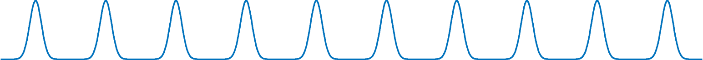
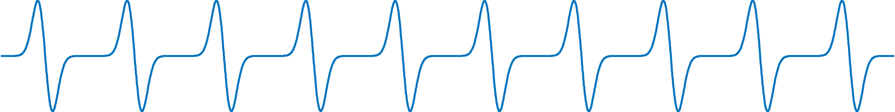
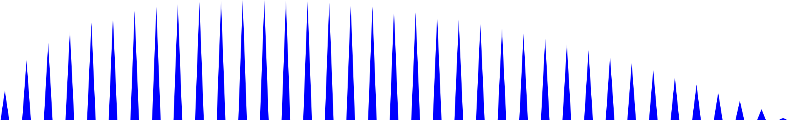
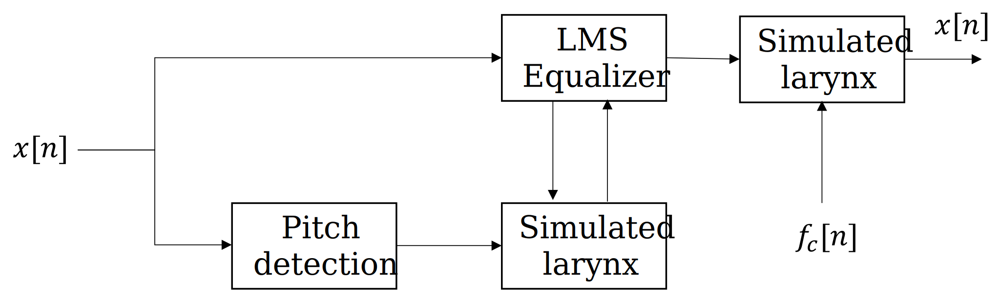

Lab 7 Primer¶
Modeling speech¶
The source-filter model of speech is ubiquitous for speech synthesis.
NET.addAssembly('System.Speech');
speech_synth = System.Speech.Synthesis.SpeechSynthesizer;
Speak(speech_synth,'Put your hands up. This is a filter bank robbery');
SetOutputToWaveFile(speech_synth,'example.wav');
Speak(speech_synth,'Put your hands up. This is a filter bank robbery');
The source is typically modeled based on the pressure wave that occurs when the vocal folds repeatedly open and close. We can model this as a pulse which is modulated by an impulse train.

The pressure wave can be modeled as the derivative of this signal.

In the frequency domain, the result is concentration of energy at evenly spaced harmonics

The spacing of these harmonics is ‘pitch’, and their envelope contains the remaining phonetic information.
A vocoder attempts to to find the parameters to a speech model from a recording. Since the sophistication of speech models varies widely, so does the sophistication of vocoders. However, the main principles can be demonstrated with just a three subsystems: (1) a source model, (2) pitch detection, and (3) an adaptive filter.
A common application of the vocoder is to rencode the speech with a new frequency \(f_c\).

Fundamental frequency estimation¶
[y,fs] = audioread('example.wav'); y = resample(y,320,147); fs = 48e3;
L = 2048; N = floor(length(y)/L); y(N*L+1:end) = []; y = reshape(y,L,N);
R = @(x,n) sum(x(n+1:end) .* x(1:end-n));
Rn = []; N0 = [];
for i_frame = 1:N
R_max = 0; n_max = 0;
for n = 200:1000
Rn(i_frame) = R( y(:,i_frame), n);
if Rn(i_frame) > R_max
R_max = Rn(i_frame); n_max = n;
end
N0(i_frame) = n_max;
Rn(i_frame) = R_max;
end
end
Simple model of vocal source¶
x1 = [];
period = 600;
for i_frame = 1:N
if Rn(i_frame)>2
period = N0(i_frame);
end
waveform1 = diff(gausswin(period,30));
for i_sample = 1:L
i_x = L*(i_frame-1) + i_sample;
i_w = mod(i_sample,length(waveform1));
i_w = i_w + (i_w == 0);
x1(i_x) = (waveform1(i_w)) * abs(Rn(i_frame));
if i_sample > L - period
x1(i_x) = x1(i_x) * ((L - i_sample)/period);
end
end
end
Modeling the vocal tract¶
y = y(1:length(x1));
n=513; h=zeros(n,1);
mu=.0005; delta=256;
p1 = []; p2 = [];
for i_sample=n+1:length(y)
t1 = x1(i_sample : -1 : i_sample-n+1)';
p1(end+1) = dot(t1,h);
e = y(i_sample-delta) - p1(end);
h = h + mu*e*t1;
end